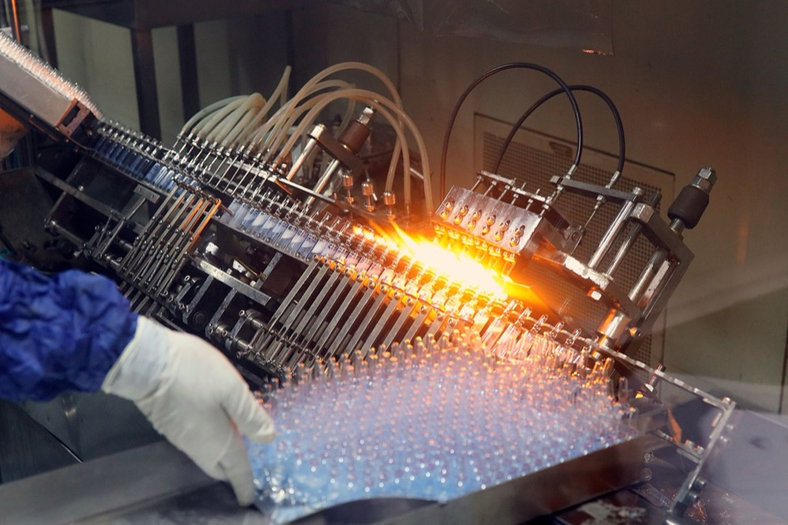
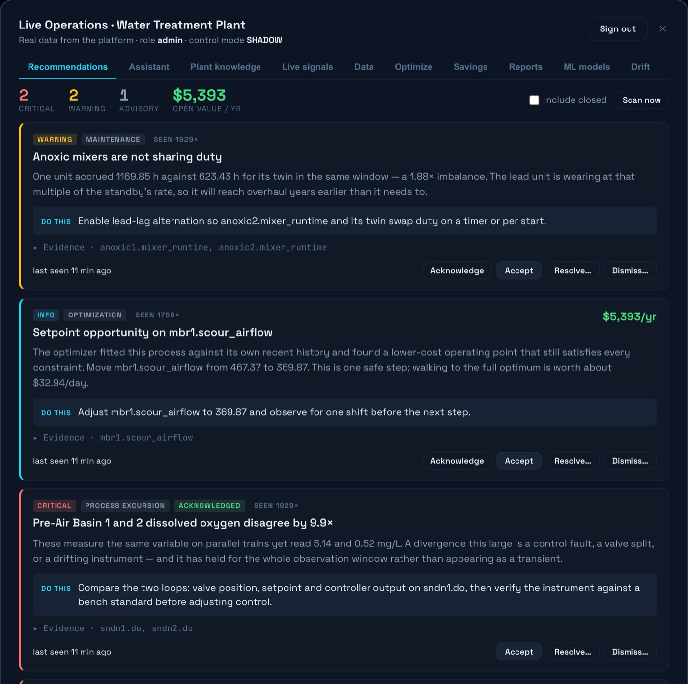

Pharma & Biotech
Continuous trend, outside the validated path.
AquaMesh observes and recommends. It is not a qualified analytical instrument, it does not sit in a validated control path, and it is never part of a safety instrumented function.

- Reads
- UV/Vis spectra and derived surrogates, alongside your methods of record
- Connects to
- Historian, BMS, cycle records — read-only by default
- To start
- Existing records. Boundary agreed with QA first
What we find
What usually turns up around the utilities.
These four turn up in most facilities we look at. The examples beneath each are the shapes they take in pharma and biotech — your own records decide which are real at your site.
-
Margin spent on every cycle
Where an endpoint is not observed continuously, cycle time has to carry margin — and that margin is paid for each time.
- A clean still running after the return line has come clean
- Utility water rejected while still comfortably within specification
-
Parallel systems drifting apart
Two loops or skids built to the same specification should trend together.
- Parallel loops behaving differently under the same demand
- Two systems on one specification slowly separating
-
Schedules that outlive their reasoning
A fixed schedule is easy to qualify and hard to revisit, so it tends to stay.
- Cycle lengths qualified once and never re-examined
- Regeneration or sanitisation on a fixed calendar rather than on condition
-
Gaps between the samples you take
Point values cannot show a slope, and gradual is how most systems actually degrade.
- A monitor reading flat between scheduled samples
- Duplicate instruments that no longer agree

AquaSpectra™ smart probe
Where the probe goes around the utilities.
In this sector the probe sits alongside your qualified instruments, never in place of them. It provides a continuous trend where the record today is a series of scheduled points.
- A full spectral fingerprint UV/Vis measurement in-situ, with optional NIR and Raman where a process needs them.
- Built to keep reading Rugged, low-maintenance and designed for continuous operation in fouling-prone streams.
- Your product is the reference A one-time model of your own stream becomes the baseline, so the system tracks deviation instead of holding an absolute calibration.
- Calibrated values when you need them BOD and COD in-situ, calibrated against your own reference samples — optional, and additional to the spectral picture.
- Reads for
- Organic residue trend and cleaning behaviour — site-calibrated surrogates, not methods of record
- Typically sits on
- CIP and SIP return lines, utility and purified water loops, effluent streams
What you actually get
A ranked list of things to do, each with a number on it.
Not a dashboard to interpret. Findings arrive with the action, the tags that are the evidence, and what the change is worth a year — to accept, resolve or dismiss.

Working together
Built for your plant, not from a preset.
- 1
Free audit
On your existing cycle and system records.
- 2
Your process, modelled
The boundary between what we observe and what your qualified systems control is drawn with QA, in writing, before anything connects.
- 3
Sensing where it pays
Sensing added only where a continuous reading would change a decision you already make.
- 4
You stay in control
Advisory by default, clamped to limits your engineers set, every approval logged.
Start with the boundary conversation.
We would rather agree where AquaMesh does not go before discussing where it does.
AquaMesh is not a qualified analytical instrument and does not sit in a validated control path. Spectral parameters are site-calibrated surrogates intended for early detection of change, alongside your methods of record.